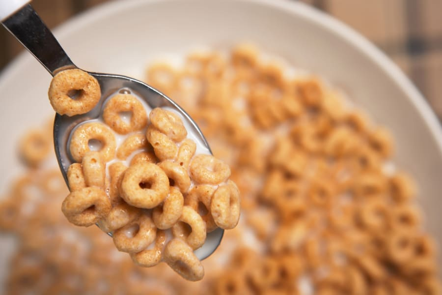

Breakfast Cereal
DESCRIPTION.
Hello in this instructable I will show you how to make that bowl of cereal you have long desired for in the morning!
Ingredients.
- Spoon.
- Bowl. I mean Like a really BIG bowl.
- Milk(Almond Milk, Oat Milk, 2% low fat, idc.)
- Your preferred cereal.
STEPS.
- Gather all supplies.
- Next, get your bowl and place it on the counter top or table. Then add cereal.
- Now it is time to add milk! Get milk, remove cap, pour onto cereal, then put cap back on milk.
- Finally, add your spoon And enjoy your bowl of cereal!
There ya go! Now go kick back put on netflix & enjoy! You deserve it! ALSO just like the great Pops said if you don't have any milk "you better put some water on that sh*t!"
Top of page Main Page